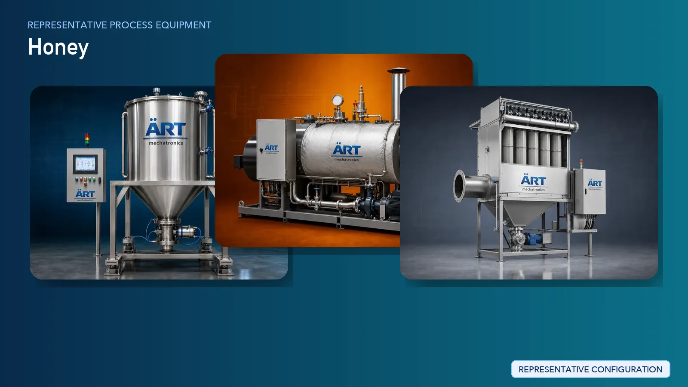

Honey Processing Plant & Machinery Solutions (Raw Honey to Packaged Honey)
Honey processing is a high-value segment in the natural food and FMCG industry, where raw honey collected from beekeepers is processed into clean, filtered, moisture-controlled, and market-ready honey. The process requires strict hygiene, controlled heating, fine filtration, and moisture reduction…

About Honey Processing Plant & Machinery Solutions processing
ART Mechatronics provides complete turnkey solutions for honey processing plants, offering advanced systems for filtration, heating, moisture control, homogenization, and packaging. Our solutions are designed for high purity, consistent quality, and compliance with domestic and international food standards.
Complete Honey Process Flow
Raw honey is received from suppliers and stored in tanks.
Ensures safe and hygienic storage.
- Easy filtration
- Controlled processing
Honey is filtered to remove wax, pollen residues, and impurities.
Ensures:
- Clear and clean honey
- Removal of foreign particles
Moisture content is reduced to improve shelf life.
Ensures:
- Prevents fermentation
- Meets export standards
- Uniform texture
- Consistent quality
Air bubbles are removed from honey.
Improves product appearance.
Honey is tested for purity and consistency. Systems Used:
Processed honey is stored before packaging.
Honey is packed into bottles, jars, or bulk containers.
Suitable for:
- Retail FMCG
- Bulk export
Machinery Required for Honey Processing Plant
- Storage Tanks
- Heating / Jacketed Tank
- Honey Filtration System / Filter Press
- Moisture Reduction System
- Homogenizer
- Deaeration System
- Quality Testing Equipment
- Filling & Packaging Machines
Turnkey Honey Processing Plant Solutions
ART Mechatronics offers complete turnkey solutions for honey processing plants, including:
- Process design & plant layout
- Heating and filtration systems
- Moisture control and homogenization systems
- Storage and packaging systems
- Automation & control panels
- Installation & commissioning
- After-sales support
We customize solutions based on:
- Raw honey quality
- Production capacity
- Export requirements
- Packaging format
Why Choose Art Mechatronics
- Expertise in hygienic food processing systems
- Advanced filtration and moisture control technology
- Preservation of natural honey properties
- Consistent product quality
- Food-grade stainless steel machinery
- Global export capability
Machinery in a Honey Processing Plant & Machinery Solutions plant
Where it's used
Get pricing & specs for the Honey Processing Plant & Machinery Solutions plant
Share the product, target capacity, current process and plant location. These details help our engineers discuss the right machine or line configuration.
One partner, from design to start-up
ART Mechatronics designs, manufactures, installs and commissions your Honey Processing Plant & Machinery Solutions solution with regional presence in India, UAE and Thailand.